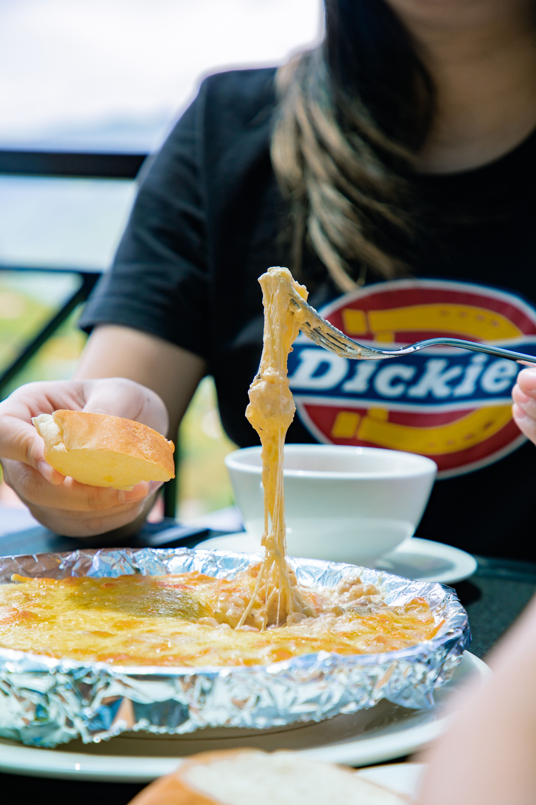

Its a cold night in November, me and my lady are hanging out in the living room pretty hungry and we both say it, I WANT MAC AND CHEESE. Both us knew we didnt know how to cook but the thought of it made both our mouths water. The Thought of it, extra Cheesy and noodles simple and so powerful all at the same time. it fits the season and night perfect.